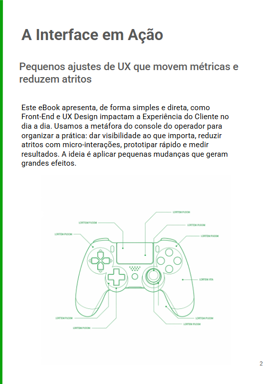
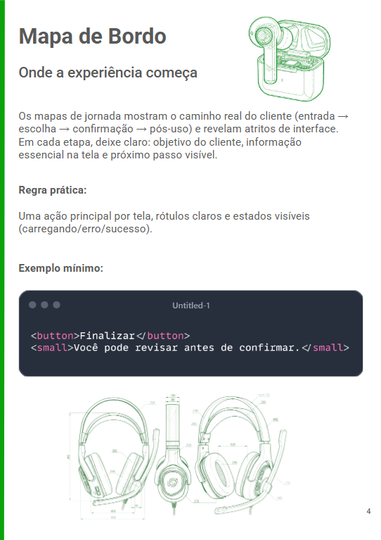
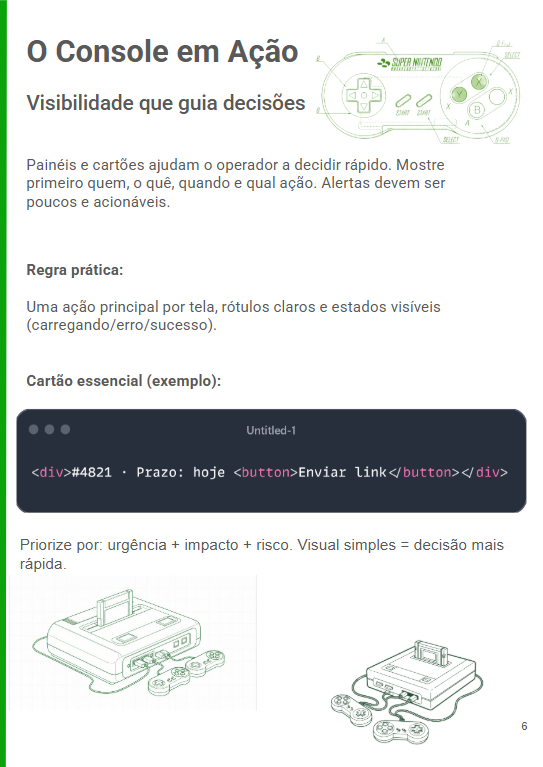
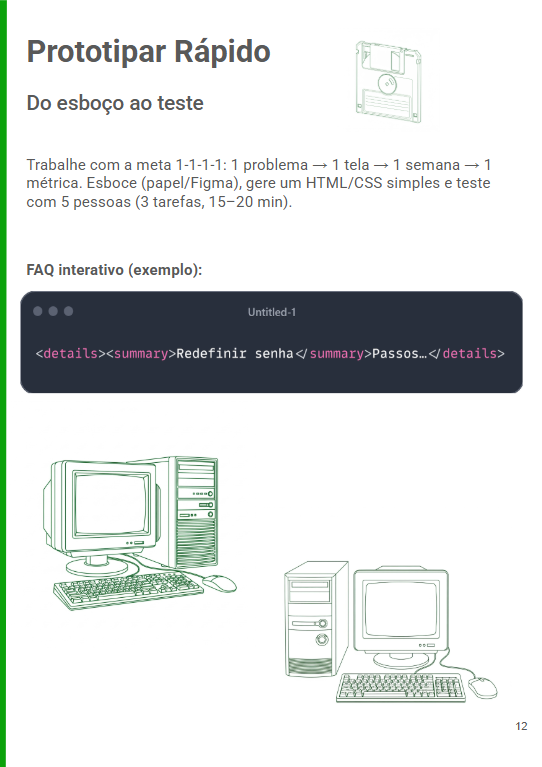

Entre Botões e Códigos
A arquitetura da experiência do cliente
Capa do eBook
Galeria




Descrição
"Entre botões e códigos" é um eBook prático sobre como a interface impacta a eficiência operacional e a experiência do cliente. Escrito a partir da perspectiva de quem opera sistemas de backoffice, atendimento e prevenção a fraudes, o material mostra como pequenas melhorias de UX reduzem retrabalho, erros e melhoram métricas operacionais.
22 páginas organizadas em 6 capítulos práticos: do mapeamento da jornada às métricas que comprovam o impacto da interface.